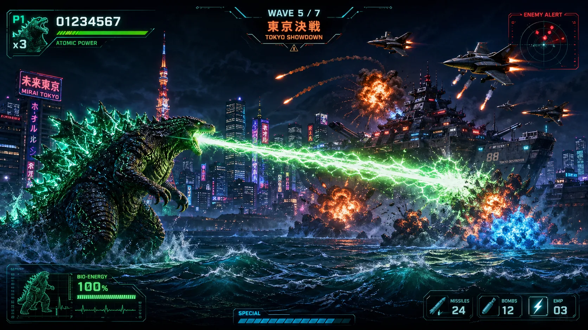
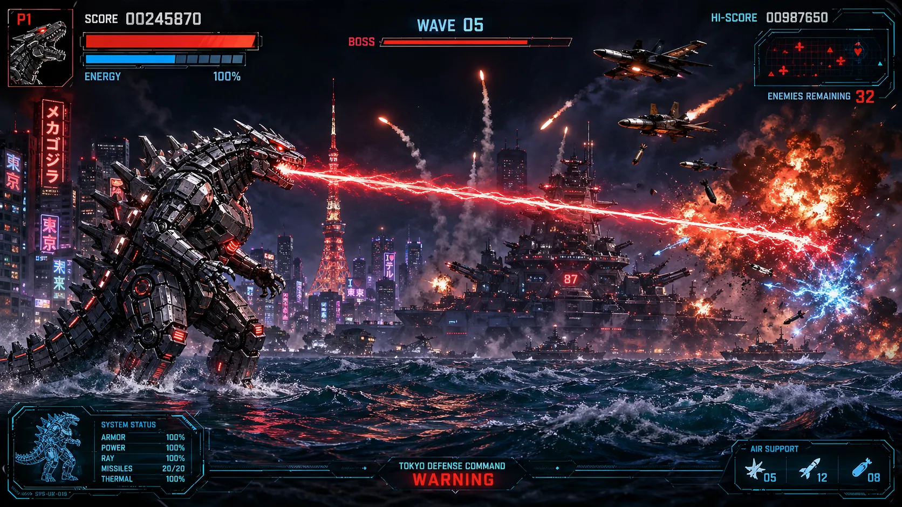
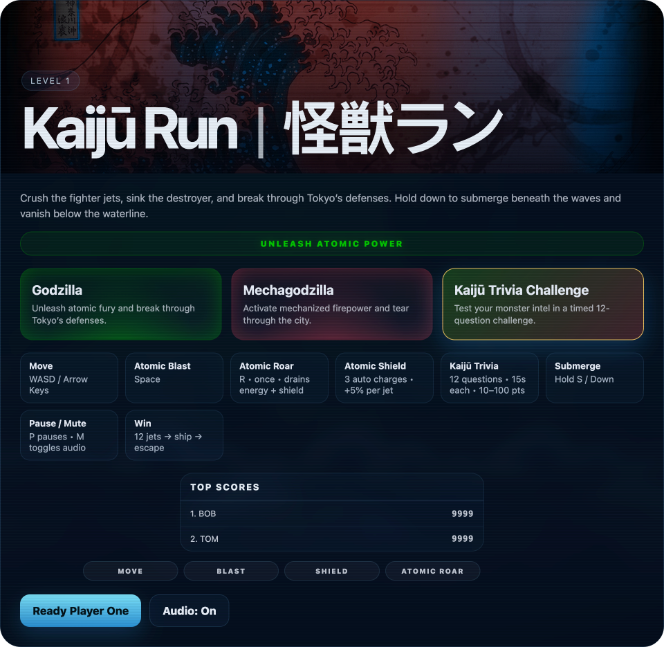
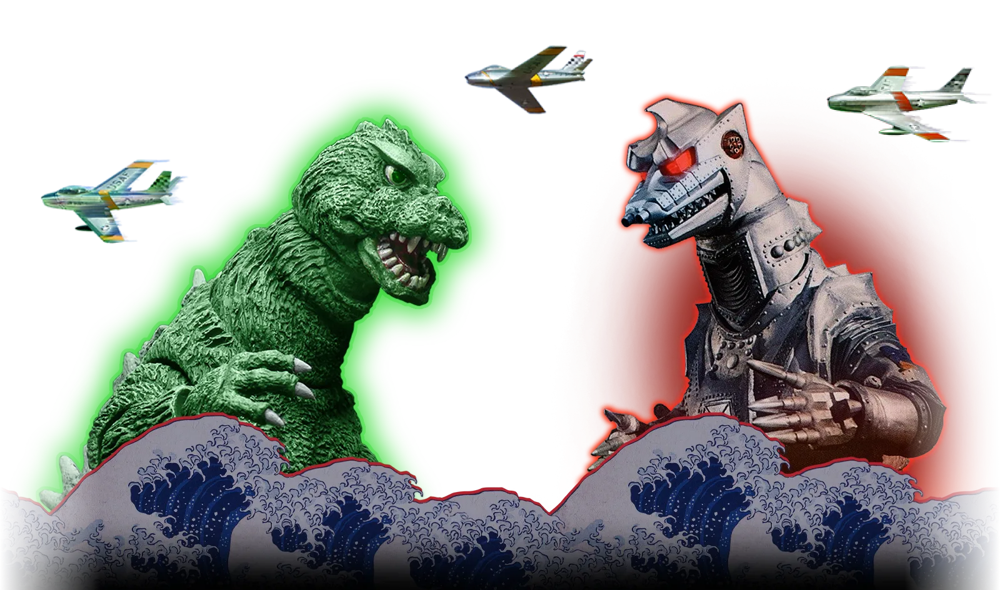
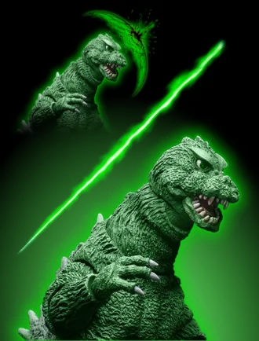
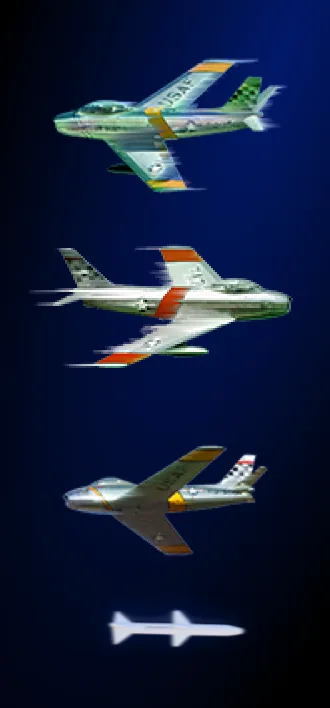
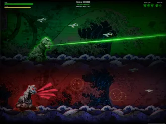
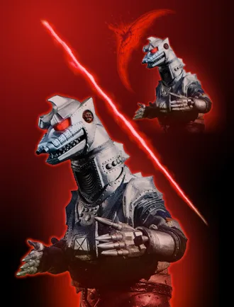
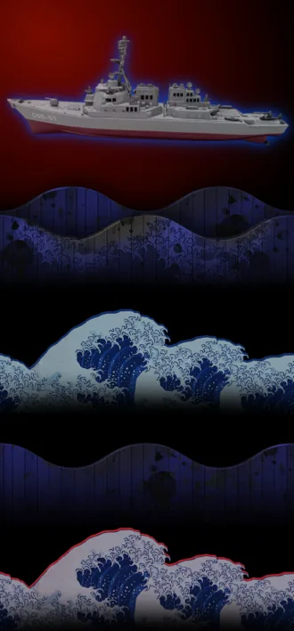

Independent Product Design · Playable Prototype · v0.97
Kaijū Run | 怪獣ラン
A playable browser game I designed and built from concept to launch, combining 0-to-1 product design, game UX, HUD hierarchy, visual direction, and front-end development.
Play Game
My Role
Product Design + Front-End
Kaijū Run started with a simple question: could I turn a loose game idea into a complete, playable product using AI-assisted tools without giving up design judgment?
I owned the full product cycle—product definition, gameplay structure, interaction design, visual direction, implementation, testing, and refinement.
Background
Turning a loose arcade idea into a functional, testable product.

Early visual direction for Godzilla's Atomic Blast.

Early visual direction for Mechagodzilla.
Most AI experiments stop at a prompt. I wanted to build something people could actually play.
The challenge: keep enemies, attacks, resources, alerts, and progression readable at speed.
Design Strategy
Keep a fast game clear under pressure.
The loop: learn, survive, manage resources, defeat the boss, and reach Tokyo.
Health and energy stay left, abilities right, and progression centered.
Prompts—Incoming Jets, Bomber Alert, Sink the Destroyer, and Tokyo’s Defenseless—explain each change and next action.
AI-Assisted Workflow
AI sped up execution; design judgment set the direction.
AI supported mechanics, JavaScript, debugging, and visual exploration.
I owned the product structure, hierarchy, gameplay, testing, and quality. Built with HTML, CSS, and JavaScript Canvas.
Play-testing reduced clutter, improved pacing, and strengthened cross-screen behavior.
Solution
Clear progression with escalating pressure.
Choose: Godzilla or Mechagodzilla, balanced by shared rules.
Learn: The first wave introduces the controls.
Adapt: Later waves add pressure and tighter decisions.
Manage: Resources create tactical tradeoffs.
Finish: Sink the destroyer and reach Tokyo.
Playable Prototype
Playable in-browser on desktop and mobile.

Kaijū Run gameplay and HUD.
The build includes two characters, escalating waves, resources, special attacks, a boss, scoring, trivia, and touch controls.
It is designed to be understood quickly and played without instructions.
Core Design Decisions
A few clear systems keep play readable and balanced.
Shared foundation: Both characters use the same core rules.
Resource choices: Health, energy, shields, and abilities create tradeoffs.
Readable threats: Consistent patterns keep difficulty fair.
Visible progress: Boss states clearly show advancement.
Replay value: Scoring rewards survival, speed, and completion.
Optional mode: Trivia adds quick rounds and immediate feedback.
Character System
Shared mechanics, distinct visual and audio identities.

Mechagodzilla’s red energy language contrasts with Godzilla’s green atomic system.
Godzilla: Green atomic effects and an organic, physical identity.
Mechagodzilla: Red lasers and a heavier, mechanical identity.
Shared baseline: Core rules stay consistent across both characters.
Visual Production
A focused system kept production fast and cohesive.





Character states: Godzilla, shielded Godzilla, Mechagodzilla, and shielded Mechagodzilla.
Threat system: jets, missiles, bombers, bombs, destroyer attacks, and boss states.
Interaction feedback: green energy, red lasers, impacts, Atomic Roar, shields, and damage states.
Environment system: water, sky, city, and color variants add depth without clutter.
Audio feedback: character roars, arcade cues, attacks, and music reinforce key actions.
HUD & Feedback
Explain changing conditions in less than a second.
Survival data stays left, abilities right, progression centered, and boss status appears only when needed.
Damage, shields, alerts, and boss feedback explain each event immediately.
Testing & Refinement
Play-testing simplified the interface and improved pacing.
Testing exposed unclear states, clutter, timing issues, and uneven difficulty.
I tuned health, energy, and shields while reducing clutter and clarifying alerts.
Trivia uses a 15-second timer, clear states, and immediate feedback.
Play Kaijū Run
Version 0.97 is playable now.
Choose a kaijū, survive the waves, sink the destroyer, or play trivia.
Outcome
What the project demonstrates.
01
Shipped a complete, publicly playable browser product.
02
Used prototyping to uncover states, feedback needs, and edge cases.
03
Applied the same clarity, hierarchy, and feedback principles used in enterprise UX.
Role: Product Definition, Game UX, Interaction Design, Visual Direction, Front-End Development
Tools: ChatGPT, image generation, AI-assisted coding, HTML, CSS, JavaScript Canvas, Bootstrap, browser QA